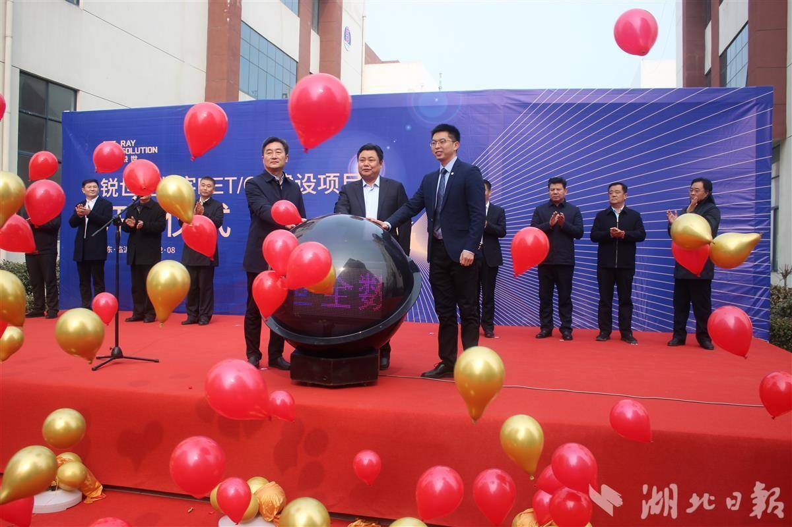
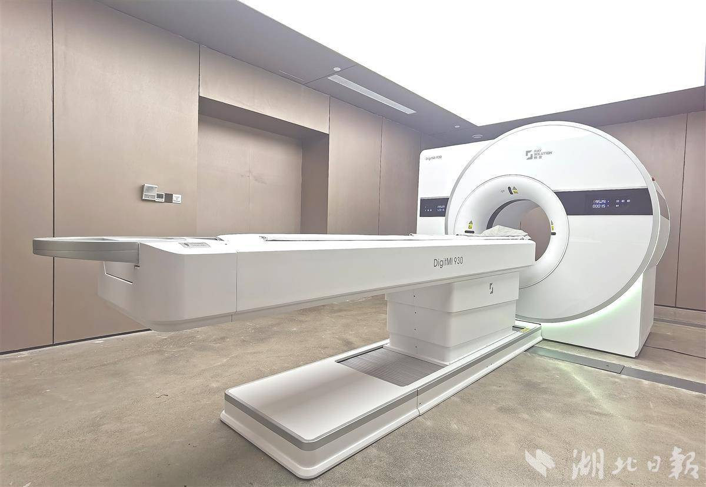

All-digital PET opens third production base in Shandong
Hubei Daily reports (by reporters Dai Jinsong and Yang Ya): On February 8, Professor Xie Qingguo's team initiated construction on their fully digital PET project in Feixian County, Shandong Province. This marks the third production base for fully digital PET following those established in Ezhou and Hefei, signaling that this high-end medical device is accelerating its entry into the market.
PET stands for Positron Emission Tomography (PET), an important piece of equipment in precision medicine primarily used for diagnosing tumors, cardiovascular diseases, and other pathologies. It is one of the three major components of medical imaging alongside CT and MRI. Professor Xie Qingguo's team was the first globally to propose the concept of fully digital PET. After 19 years of independent research and development, they launched their first clinical fully digital PET device in June 2020.

Zhang Bo, responsible for industrialization at the R&D team and CEO of Rayence Medical, stated that fully digital PET integrates advantages such as high originality, mature technology, and autonomous control. It can drive comprehensive innovation across the entire industry chain. Currently, fully digital PET has formed a complete innovative chain from key materials to core components and system integration.
According to reports, Rayence Medical's DigitMI PET-CT product series is currently the only medical equipment that simultaneously achieves 'precise sampling' and 'fully digital' characteristics. Fully digital PET resolves the long-standing issues of traditional PET being constrained by ultra-high-speed scintillation pulse signal sampling problems, namely 'inaccurate measurement', 'difficult use', and 'limited application'.
Last December, Rayence Medical launched its new generation of digital PET/CT DigitMI 930. Clinical usage indicators show that this device can complete single-bed scanning imaging within 20 seconds and full-body scanning in just 80 seconds, leading the world in imaging speed.
Editor: Gong Xue